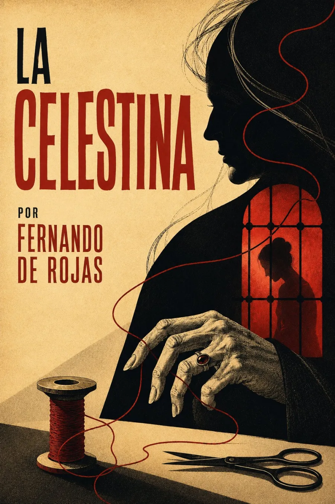

Audiolibros · Segunda Ola
Fernando de Rojas · Comedia: 1499
La Celestina
Todo empieza con un hilo.
Una promesa, un deseo, una deuda.
Nadie sale indemne de esta trama.
Escuchar cómo se teje una tragedia.
Grabación próximamente
Volumen

La mano que mueve el hilo
Antes de llamar a la puerta de Melibea, Celestina prepara el hilado e invoca a Plutón. En el auto III, la materia cotidiana del oficio se convierte en instrumento de una voluntad: entrar en otra casa, ablandar una resistencia y obtener una recompensa.
El hilo pasa entre sus dedos; las palabras harán el resto.
La escena abre una pregunta que la obra no deja reducir a una respuesta fácil: ¿cuánto depende del conjuro y cuánto de la extraordinaria capacidad de Celestina para persuadir? El deseo de Calisto circula entre criados, amantes, dinero y promesas. Melibea también toma la palabra y decide; nadie queda fuera de las consecuencias.
La codicia rompe los acuerdos que parecían sostener la intriga. El lenguaje que seduce y negocia termina desembocando en violencia, pérdida y en el lamento de Pleberio. La obra deja oír un mundo entero antes de mostrar cómo se deshace.
La Comedia de Calisto y Melibea, en dieciséis actos, se asocia tradicionalmente con la edición de Burgos de 1499; la datación de ese impreso es discutida. La posterior Tragicomedia amplía el texto a veintiún actos. Registro de la Comedia · Biblioteca Virtual Miguel de Cervantes. Texto del conjuro. La ilustración interpreta la escena; el rojo del hilo procede de la identidad visual de la portada.
La lectura
Lectura completa
Grabación próximamente. La lectura de la obra estará disponible aquí. Las grabaciones se incorporarán cuando estén preparadas.
Valoración

Excelente